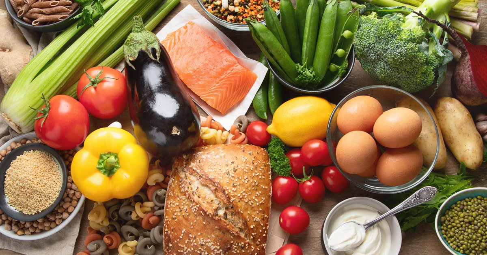

The Plant Based diet
There are many delicious foods and beverages to choose from when following a lacto-vegetarian diet for weight loss.
About
A plant-based diet is any diet that focuses around foods derived from plant sources. This can include fruit, vegetables, grains, pulses, legumes, nuts and meat substitutes such as soy products.
People often have different interpretations of what ‘plant-based’ eating looks like. Some people still include small amounts of animal products such as meat and fish, while focusing mainly on vegetarian foods – this is referred to as a semi-vegetarian or flexitarian diet. Plans that cut out meat but still include fish are referred to as pescatarian diets. People who don’t eat meat or fish but still include dairy and eggs are referred to as vegetarian, while those who cut out any animal derived products, including dairy, eggs, honey and gelatin are referred to as vegan.
People following plant-based diets and consuming a wide variety of fruits, vegetables and pulses are likely to find it easier to meet their five-a-day target. Due to this, they are also likely to have good intakes of fibre and the vitamins and minerals that are present in fruit and vegetables, including folate, vitamin C and potassium, all of which are important for good health.
However, it is worth noting that ‘plant-based’ does not automatically mean 'healthy', particularly when it comes to processed and packaged foods. Technically, products such as refined sugar, white flour and certain vegetable fats can all be labelled ‘plant-based’ as they are vegetarian, but this does not mean that they should make up the bulk of a healthy diet.